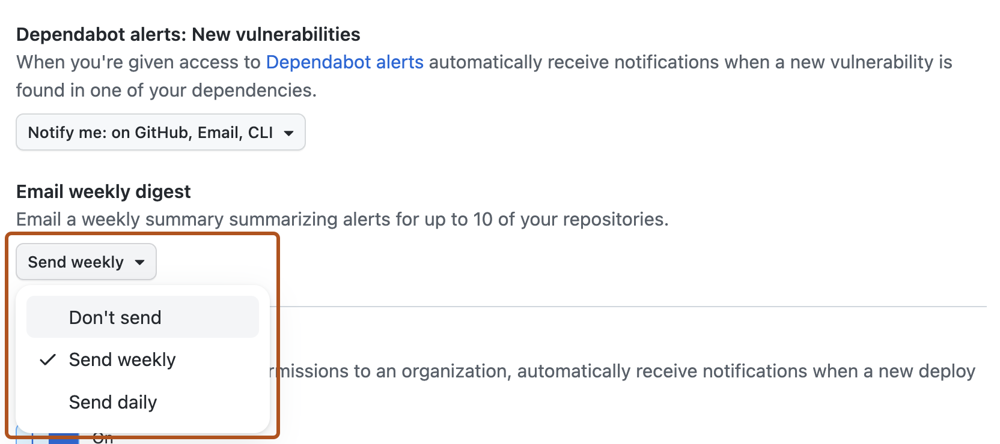

Optimize how you receive notifications about Dependabot alerts.
By default, GitHub sends notifications about new alerts by email to people with write, maintain, or admin permissions to a repository. See About Dependabot alerts.
You can configure notification settings for yourself or your organization from the Manage notifications drop-down shown at the top of each page. For more information, see Configuring notifications.
You can choose to receive notifications:
Note
The email and web/GitHub Mobile notifications are:
You can customize the way you are notified about Dependabot alerts. For example, you can receive a daily or weekly digest email summarizing alerts for up to 10 of your repositories using the Email weekly digest option.

Note
You can filter your notifications on GitHub to show Dependabot alerts. For more information, see Managing notifications from your inbox.
Email notifications for Dependabot alerts that affect one or more repositories include the X-GitHub-Severity header field. You can use the value of the X-GitHub-Severity header field to filter email notifications for Dependabot alerts. For more information, see Configuring notifications.